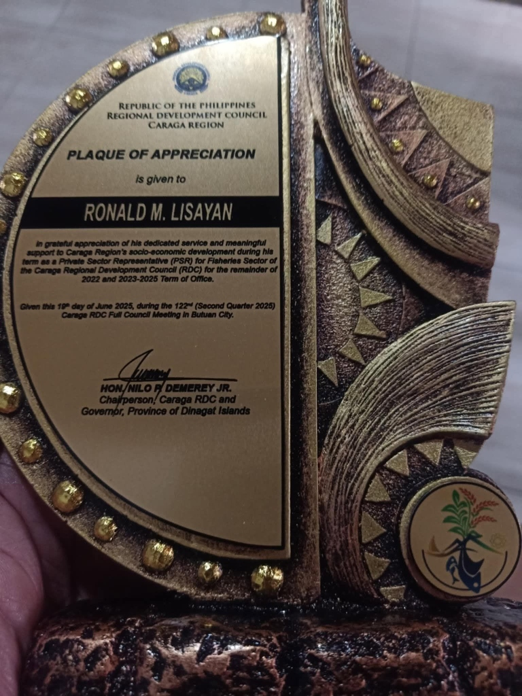

Regional Governance Plaque
Plaque of Appreciation — RDC Caraga Fishery Sector PSR
Republic of the Philippines • Regional Development Council Caraga Region
Conferred to Ronald M. Lisayan in grateful appreciation of dedicated service and meaningful support to Caraga Region's socio-economic development during his term as Private Sector Representative (PSR) for the Fisheries Sector for the 2022 and 2023–2025 Term of Office, signed by Caraga RDC Chairperson Hon. Nilo P. Demerey Jr.